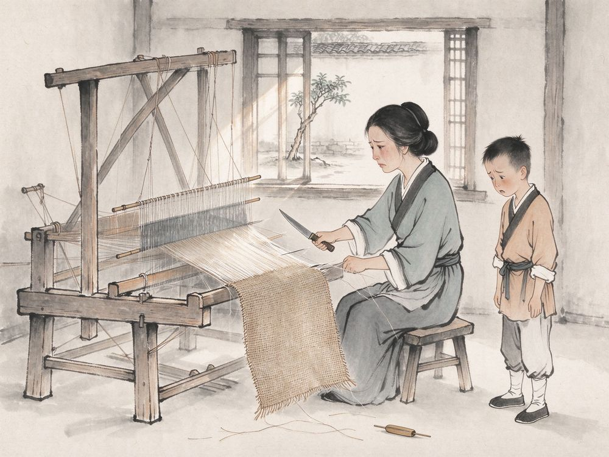

第 五 课
昔孟母，择邻处。
子不学，断机杼。
xī mèng mǔ zé lín chǔ zǐ bù xué duàn jī zhù
① 先读右列
xī
昔
八画
mèng
孟
八画
mǔ
母
五画
② 再读左列
zé
择
八画
lín
邻
七画
chǔ
处
五画
先 ↓ 右列 再 ← 左列
古法竖排，两联四列，顺次读：右列 → 左列 → 右列 → 左列，每列自上而下。
③ 再读右列
zǐ
子
三画
bù
不
四画
xué
学
八画
④ 最后读左列
duàn
断
十一画
jī
机
六画
zhù
杼
八画
择是挑 · 邻是住的地方、身边的人 · 杼是织布机上的梭子
少儿共读读给孩子听
上一课说，教要专。这一课说，教还得会挑地方——孩子泡在什么里头，是件大事。
很久以前，有一位孟妈妈，带着小小的儿子过日子。
起初他们住在墓地旁边。小孟子天天看着人家抬棺、送葬、哭拜，回家就学起来，用小手比划着哭丧的样子。孟妈妈看见了，说：这地方不能住了。于是搬家。
搬到市集边上。小孟子又天天看商人吆喝、讨价、夸自己的货，回家也学着叫卖。孟妈妈又说：这地方也不能住了。再搬。
这一次，搬到了学宫旁边。每天听见的是读书声，看见的是孩子们互相作揖、先生讲礼。小孟子也跟着作揖、跟着念书。孟妈妈这才说：这里可以住了。

可孩子总有犯懒的时候。有一阵，小孟子读书读烦了，偷偷跑回家。
孟妈妈没有骂他。她把正在织的布拿过来，当着儿子的面，一刀把绷紧的线割断。布一下子散了，半匹织好的布成了乱线。
她说：你读书读到一半停下来，就跟这匹布一样——线断了，接不上，前面织的全废了。

小孟子站在那里，看着散下来的线，一句话也说不出来。从那以后，他再没有半路跑回家。
这个孩子，后来成了孟子。
择 邻挑 一 个 好 地 方
身边的人、听得见的话、天天看见的事，都在悄悄教你。挑不了全部，就先挑离你最近的那几样。
断 织不 要 断 在 半 处
布断在半处，前面白织；学断在半处，前面白学。宁可慢，不要断。
成 长 小 启 示
- 看看你天天和谁在一处。让你更想学好的，多待一会儿。
- 换不了地方，就换一小块：换一个座位、换一个玩伴、换一段睡前时间。
- 一件事学到一半想放，先想一想：前面那些功夫，是不是白费了。
- 真断了，也别怕。把线接回来，接着织。
给 爸 爸 妈 妈 的 一 句 话 · 择 邻 的 三 个 做 法
“择邻”不是非要搬家，是替孩子挑他每天真正接触到的那几样。
一、挑“最近的三样”。同桌、常玩的伙伴、睡前那半小时。这三样改一样，胜过搬一次家。
二、不贬低旧邻。不说“他们家孩子不好”，只说“我们去找更合适的地方”。孩子学的是你的判断，不是你的嫌弃。
三、要断的时候，别用羞辱。孟母断的是布，不是孩子。想让他停一停，就说清代价；说完，把线接上，一起织。
— 10 —